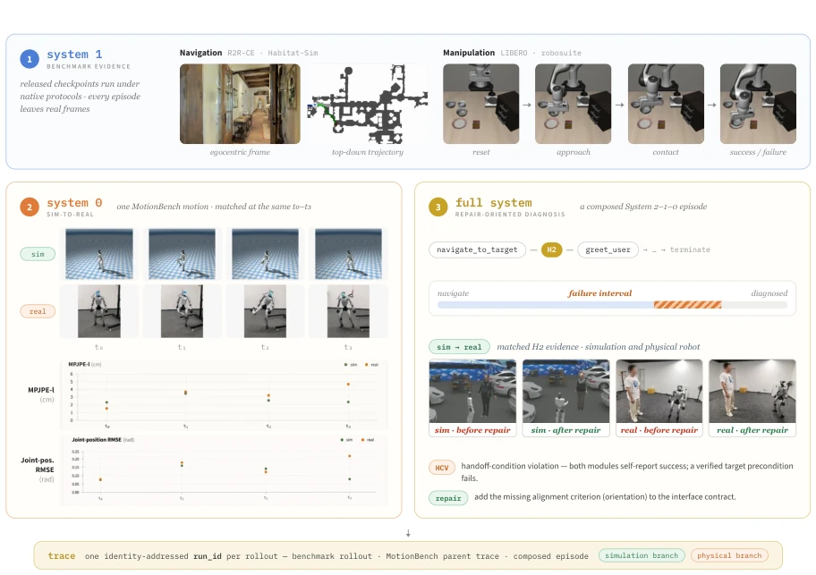
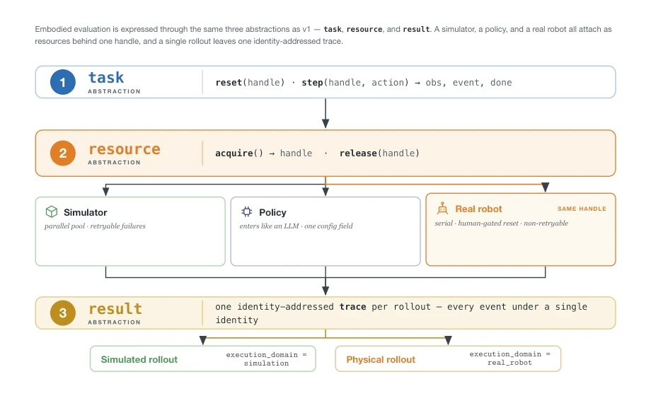
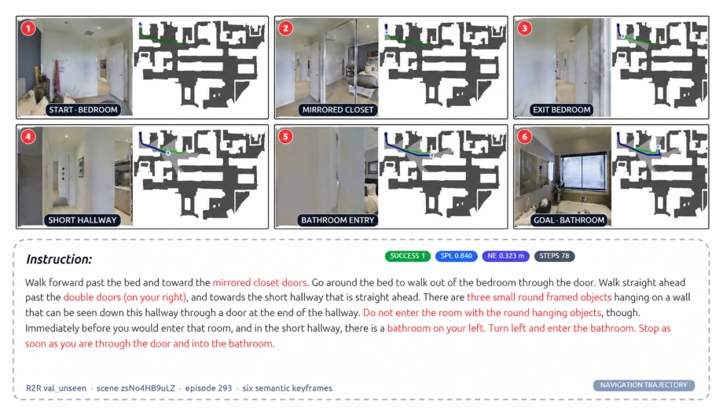
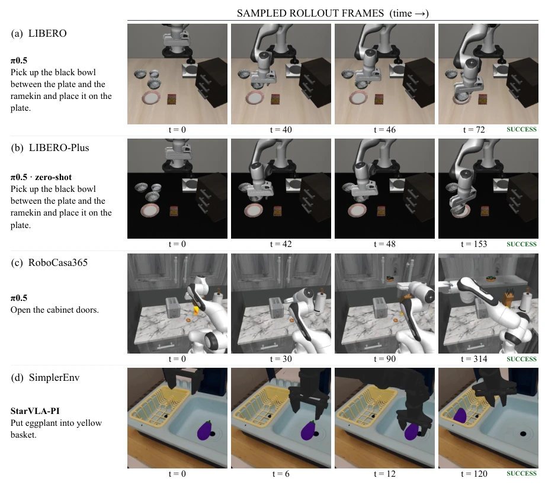
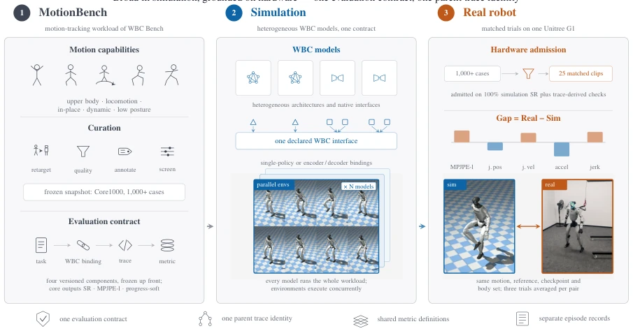
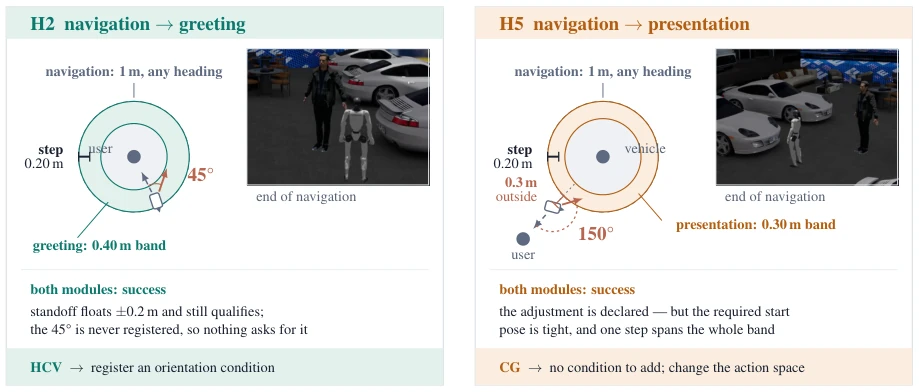
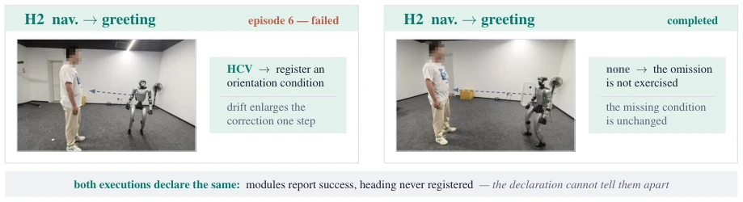

这篇论文与其说是给机器人灌了脑，不如说是给评估体系做了次“整容”。DeepInsight II 没搞新策略，而是死磕“评估一致性”。它把仿真和真机跑在同一个 trace 下，这点挺硬核，毕竟大部分论文只敢在仿真里吹牛。不过，把真机拉进来容易，把真机误差归因难，它提出的“可修复性”标准虽然有新意，但实际操作中硬件方差还是个大坑，且真机测试成本高昂。总的来说，这是给 Embodied AI 界的一剂清醒剂：别光跑分，看看真机能不能落地。它证明了基础设施的连续性比单一模型的提升更能反映真实部署风险。
This paper is less about endowing robots with intelligence and more about performing a "facelift" on the evaluation system. DeepInsight II did not pursue new strategies but instead focused relentlessly on "evaluation consistency". It runs simulation and real-world robots under the same trace, which is quite rigorous, as most papers only dare to claim in simulation. However, integrating real-world robots is easy, but attributing real-world errors is difficult; although its proposed "repairability" standard is novel, hardware variance remains a significant pit in actual operation, and real-world testing costs are high. Overall, this is a wake-up call for the Embodied AI community: do not just run benchmarks, see if real-world robots can be deployed. It demonstrates that infrastructure continuity reflects real deployment risks better than single model improvements.
研究动机Motivation
现有评估体系存在严重的“断层”。System 2（推理层）有成熟基准，但 System 1（导航/操作）和 System 0（全身控制）各自为政，仿真与真机评估互不相通 [6]。DeepInsight v1 虽统一了抽象层，但仅限于仿真 [6]。真机部署风险高，却缺乏与基准对应的实证证据。现有工作如 VLA 评估 harness [5] 虽解耦了模型与基准，但未解决仿真到真机的 trace 对齐问题。这导致部署时无法准确定位是策略问题还是执行问题，评估结果难以横向比较。我们需要一种能贯穿从基准到真机的统一证据链，而非碎片化的工具链。
Existing evaluation systems suffer from serious "gaps". System 2 (reasoning layer) has mature benchmarks, but System 1 (navigation/operation) and System 0 (whole-body control) operate in silos, with simulation and real-world evaluations disconnected [6]. Although DeepInsight v1 unified the abstraction layer, it was limited to simulation [6]. Real-world deployment risks are high, yet there is a lack of empirical evidence corresponding to benchmarks. Existing work such as VLA evaluation harness [5] decoupled models and benchmarks but did not solve the trace alignment problem from simulation to real-world. This leads to an inability to accurately locate whether it is a strategy problem or an execution problem during deployment, making evaluation results difficult to compare horizontally. We require a unified evidence chain that spans from benchmarks to real-world, rather than a fragmented toolchain.
The core is inheriting DeepInsight v1's Task-Resource-Result three abstractions, but extending the backend. Simulators, policies, and real-world robots are all bound as resources, sharing the same reset/step driver. The key innovation lies in "Same Trace Identity": simulation and real-world rollouts share parent trace identity, only the execution_domain field differs. The System 1 part retains native protocols, running published checkpoints through adapters to ensure benchmark fidelity. System 0 introduces MotionBench, freezing motion workloads and metrics (SR, MPJPE-l), comparing heterogeneous models like HoloMotion and SONIC. In System 2-1-0 full-link diagnosis, failures are attributed to "boundary definition" or "executability" problems, and repair budgets are quantified. In this way, results under different hardware and simulators can be aligned under the same trace, eliminating noise brought by toolchain differences. Additionally, the real-world end adopts safety interlocks and manual reset logs to ensure physical risks are controllable.
System 1 covers 6 benchmarks (R2R-CE, RxR-CE, LIBERO, etc.), reproducing models like StreamVLN to verify protocol fidelity. System 0 evaluates 4 WBC models on MotionBench and conducts matching tests of 25 clips on Unitree G1 real robots. Results show simulation and real-world error (Gap) is between 10%-35%, SONIC low-latency version real-world error is larger, revealing dynamic performance differences. In full system testing, H2 navigation to greeting handover failure is attributed to boundary definition problems, H5 attributed to executability limitations. Ablation studies show shared trace can effectively isolate hardware variance. Additionally, by comparing different models' performance under the same trace, it is found that simulation ranking and real-world performance are highly consistent, verifying the evaluation's validity.
其他图片Other Figures

Figure 1. The embodied evidence of this report, on one runtime: System 1 checkpoints under native benchmark protocols, a System 0 motion matched between simulation and the physical robot, and a composed System 2–1–0 episode diagnosed down to a concrete repair and re-tested in simulation and on the physical robot. Representative H2 frames show the state before and after the orientation repair. Every rollout writes into one identity-addressed trace, so all three kinds of evidence share a single result representation.

Figure 2. The embodied evaluation substrate. Task contracts define the episode and benchmark semantics; simulators, policies under test, and the real robot attach through resource bindings; and every rollout writes into an identity-addressed result trace. Matched simulated and physical episodes share a parent trace identity while retaining execution-domain-specific records.

Figure 3. Example R2R-CE episode from the unified navigation evaluation. Six semantic keyframes show the egocentric monocular observations used for policy inference alongside the trace-derived trajectory visualization, instruction, and terminal metrics. The top-down map is used only for visualization and is not exposed to the policy.

Figure 4. Representative successful closed-loop rollouts from LIBERO, LIBERO-Plus, RoboCasa365, and Sim- plerEnv (top to bottom). Each row identifies the evaluated checkpoint and task and shows the reset observation (t = 0), two intermediate observations, and the final sampled observation at the indicated saved-rollout frame indices. Intervening observation–action steps are omitted; all four episodes satisfy their benchmark’s native success predicate.

Figure 5. System 0 evaluation overview. MotionBench fixes the versioned workload and measurement semantics; heterogeneous WBC models are compared in a common simulation space; and trace-qualified WBC–motion pairs enter matched real-robot trials for simulation–reality analysis. SR is used only in simulation; hardware correspondence uses matched root-relative and joint-space measurements.

Figure 7. The two causes at the end of navigation. At H2 the heading error is never registered; at H5 the required start pose is declared but sits 150◦away, in a band one step wide. Angles and offsets are representative; band widths and the step are measured (Table 13).

Figure 8. H2 on hardware at the end of navigation. The dashed line marks the heading the greeting requires. Frames are representative; the entry region and step of Table 13 are calibrated in simulation, not re-measured on hardware.